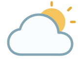

CURRENT WEATHER
°C
- Feels like
- °CHow the air feels
- Humidity
- %Moisture in the air
- Wind speed
- km/hWind at 10 metres
A LOOK OUTSIDE
Find the current weather wherever your day takes you.

Enter a city above to see what the sky has in store.
CURRENT WEATHER
°C